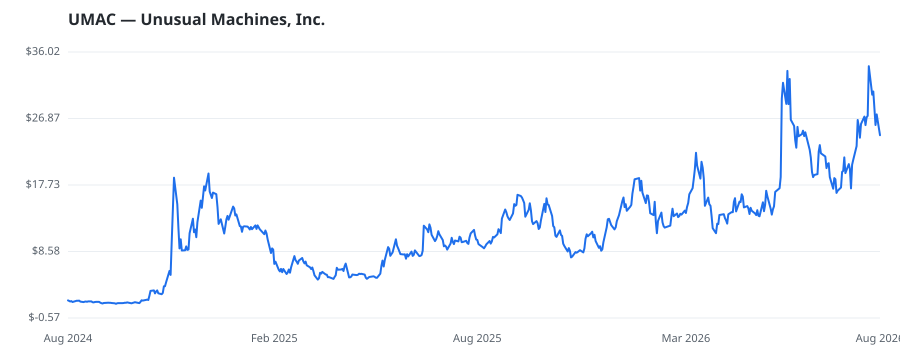

bullish · bearish · n/a — dots: price>SMA10 · SMA10>SMA50 · SMA50>SMA200 · up>down volume (20d)
Technology Hardware · small cap

Unusual Machines Inc is engaged in manufactures and sells drone components and drones across a diversified brand portfolio through business-to-business (B2B) sales and a curated retail channel. RADIO & TV BROADCASTING & COMMUNICATIONS EQUIPMENT · website
| Revenue | $11.2M | Net income | $-19.2M |
|---|---|---|---|
| Operating income | $-25.2M | Diluted EPS | $-0.74 |
| Assets | $182.7M | Equity | $174.9M |
🛒 Newly buying: Halter Ferguson Financial Inc. (+14%, 5.6% of book)
| Fund | Fund alpha vs SPY | Position | % of book |
|---|---|---|---|
| Halter Ferguson Financial Inc. | +14% | $34M | 5.6% |
Hedge data: SEC EDGAR 13F · ranked funds beat SPY in >50% of their quarters · fund alpha = mirror-portfolio return minus SPY.